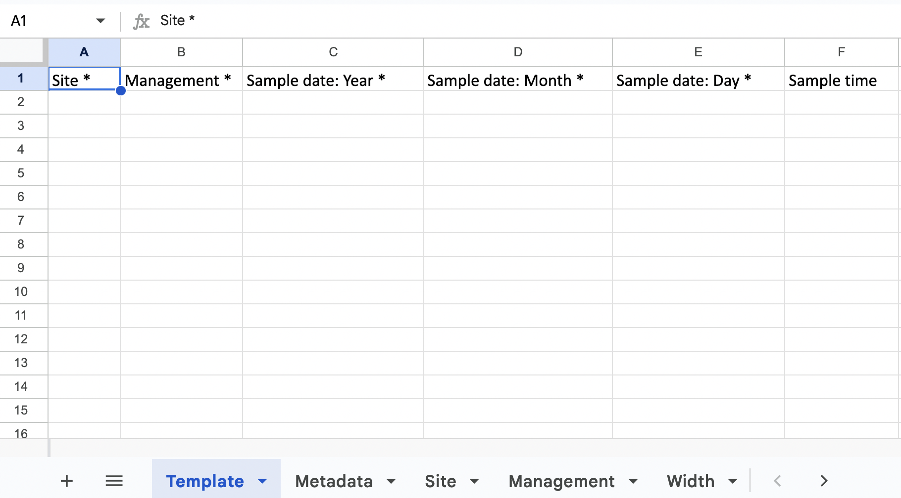
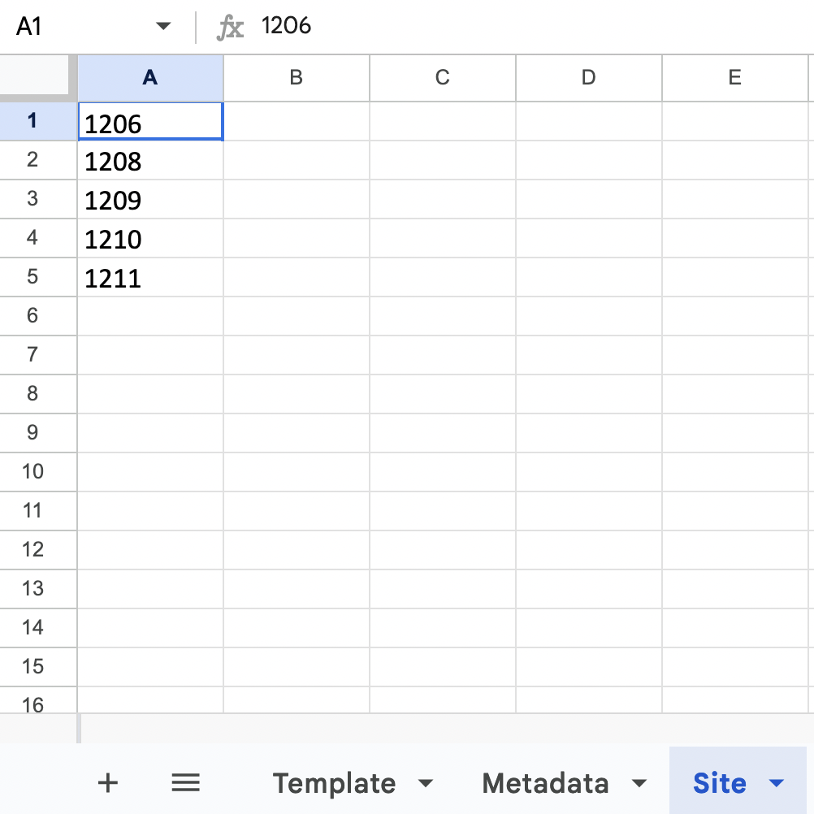

vignettes/articles/importing_fishbelt.Rmd
importing_fishbelt.RmdDo you have a lot of existing data and are just starting to use MERMAID? You might be wondering on how to import those data into MERMAID. You can import (ingest) your legacy data into MERMAID by using the mermaidr package. More info on the ingestion workflow with mermaidr can be seen on the ingestion documentation.
Here we provide an example on how to import your fish data that uses the fish belt method into MERMAID using mermaidr. Please note that you need to prepare your project in the app first before starting this process. Detail on how to set a new project can be seen here. For this example, we have already prepared a project in the MERMAID app named MERMAID reef survey.
We have also prepared a video to walk you through the ingestion process. You can download the fishbelt and sites data for that example to follow along.
The steps for importing legacy fish belt data are:
Before downloading the MERMAID template, make sure that you already have the mermaidr package installed. You can install the package from GitHub using the code below:
remotes::install_github("data-mermaid/mermaidr")In this example, we are going to also use the tidyverse package. The
first step is to load the packages and access your MERMAID projects by
using mermaid_search_my_projects() with the project
name.
At this point, a browser window will open for you to authenticate by logging into the MERMAID app. Once you’ve logged in, you can close the browser and come back to R. Your login credentials will last for a day and after it expires you will need to log in again.
library(mermaidr)
library(tidyverse)
reef_survey <- mermaid_search_my_projects("MERMAID reef survey")The next step is to get the fish belt MERMAID template and options
using mermaid_import_get_template_and_options() and save it
to a file called fishbelt_mermaid_template.xlsx.
fish_template_and_options <- mermaid_import_get_template_and_options(
reef_survey,
"fishbelt",
"fishbelt_mermaid_template.xlsx"
)## ✔ Import template and field options written to fishbelt_mermaid_template.xlsx
The XLSX file consists of the fish belt MERMAID template and the options that are tailored based on your project. For example, the site options that are accepted are all the sites that you have added in the project through the MERMAID app.

You can also preview the template in R:
fish_template_and_options[["Template"]]## # A tibble: 0 × 22
## # … with 22 variables: Site * <chr>, Management * <chr>, Sample date: Year * <chr>,
## # Sample date: Month * <chr>, Sample date: Day * <chr>, Sample time <chr>,
## # Depth * <chr>, Transect number * <chr>, Transect label <chr>,
## # Transect length surveyed * <chr>, Width * <chr>, Fish size bin * <chr>,
## # Reef slope <chr>, Visibility <chr>, Current <chr>, Relative depth <chr>, Tide <chr>,
## # Sample unit notes <chr>, Observer emails * <chr>, Fish name * <chr>, Size * <chr>,
## # Count * <chr>Or if you want to investigate the column names in R, you can use the code below:
names(fish_template_and_options)## [1] "Template" "Site *" "Management *"
## [4] "Sample date: Year *" "Sample date: Month *" "Sample date: Day *"
## [7] "Sample time" "Depth *" "Transect number *"
## [10] "Transect label" "Transect length surveyed *" "Width *"
## [13] "Fish size bin *" "Reef slope" "Visibility"
## [16] "Current" "Relative depth" "Tide"
## [19] "Sample unit notes" "Observer emails *" "Fish name *"
## [22] "Size *" "Count *"All column names with asterisk shows that it is mandatory. You can leave the columns without the asterisk blank if the data is not available.
Investigate all the available options for each column before adjusting the format. For example, to look at the options for site in R:
fish_template_and_options[["Site *"]]## $required
## [1] TRUE
##
## $help_text
## [1] "A unique name of a site where data was collected. Every site must be defined before ingestion and set up in the project in the web app."
##
## $choices
## # A tibble: 5 × 1
## value
## <chr>
## 1 1206
## 2 1208
## 3 1209
## 4 1210
## 5 1211After downloading the fish belt MERMAID template, you’re ready to start reformatting your data. In this example, we are using a fish belt width of 5 m for fish size 10-34 cm, and 20 m for fish size bigger than 34 cm. We also identify the fish size up to the closest cm.
The first step is to read in your data. We have prepared our data in a CSV file and stored it in our project directory.
We read our fish belt data (stored in fishbelt.csv file)
and our sampling event data (stored in sites.csv file), and
save it to two different objects in R.
The MERMAID ingestion template requires the sample event data and the
observation data to be combined. Therefore, we need to add the
sites data set to fish observation data. Look at the
available columns in the site and fishbelt
data sets:
sites_data## # A tibble: 2 × 8
## SiteID Zone Year Month Day Reef_slope visibility current
## <dbl> <chr> <dbl> <dbl> <dbl> <chr> <dbl> <chr>
## 1 1208 Control 2021 3 15 slope 15 low
## 2 1206 Control 2021 3 15 slope 15 low
fishbelt_data## # A tibble: 10 × 8
## SiteID Depth Transect_length Width Transect_number `Fish species` Size_cm Abundance
## <dbl> <dbl> <dbl> <dbl> <dbl> <chr> <dbl> <dbl>
## 1 1208 5 5 5 1 Parupeneus multifa… 15 5
## 2 1208 5 5 20 1 Acanthurus bariene 37 1
## 3 1208 5 5 20 1 Platax teira 37 1
## 4 1208 5 5 20 1 Bolbometopon muric… 120 1
## 5 1208 5 5 20 1 Parupeneus indikus 36 1
## 6 1208 5 5 5 1 Acanthurus auranti… 17 4
## 7 1208 5 5 20 1 Plectorhinchus cha… 36 4
## 8 1208 5 5 5 1 Zanclus cornutus 10 2
## 9 1208 5 5 20 1 Variola albimargin… 36 1
## 10 1208 5 5 20 1 Lutjanus sp. 36 3Then combine the site data to fishbelt
data, joining on the SiteID identifier.
Looking at the available data, there are still two mandatory fields that are not yet added (Fish size bin and Observer emails) and one mandatory field that need to be adjusted ( Fishbelt Width). We need to look at the options allowed for these columns:
fish_template_and_options[["Width *"]]## $required
## [1] TRUE
##
## $help_text
## [1] "Width of fish belt transect, in meters. See relevant tab on ingestion template for choices."
##
## $choices
## # A tibble: 6 × 1
## value
## <chr>
## 1 10m
## 2 20m
## 3 2m
## 4 5m
## 5 Mixed: < 10cm @ 2m, >= 10cm @ 5m
## 6 Mixed: >10 cm & <35 cm @ 5 m, >=35 cm @ 20 m
fish_template_and_options[["Fish size bin *"]]## $required
## [1] TRUE
##
## $help_text
## [1] "Name of bin scheme used to estimate fish size for the transect. See relevant tab on ingestion template for choices. Choose 1 cm if the fish size recorded does not use bins."
##
## $choices
## # A tibble: 5 × 1
## value
## <chr>
## 1 1
## 2 10
## 3 5
## 4 AGRRA
## 5 WCS India
fish_template_and_options[["Observer emails *"]]## $required
## [1] TRUE
##
## $help_text
## [1] "Comma-separated list of emails of sample unit observers (e.g. 'me@example.com,you@example.com')."
##
## $choices
## # A tibble: 1 × 1
## value
## <chr>
## 1 email@mermaid.orgNow that we know the available options, we are going to add them manually using the code below:
fishbelt_data <- fishbelt_data %>%
mutate(
`Width *` = "Mixed: >10 cm & <35 cm @ 5 m, >=35 cm @ 20 m",
`Fish size bin *` = 1,
`Observer emails *` = "email@mermaid.org"
)The visibility data are not the same as the options accepted by MERMAID:
## # A tibble: 1 × 1
## visibility
## <dbl>
## 1 15Let’s check how it is formatted in template and implement the option into our data:
fish_template_and_options[["Visibility"]][["choices"]]## # A tibble: 4 × 1
## value
## <chr>
## 1 <1m - bad
## 2 1-5m - poor
## 3 5-10m - fair
## 4 >10m - excellent
fishbelt_data <- fishbelt_data %>%
mutate(visibility = case_when(
visibility == 1 ~ "<1m - bad",
visibility == 5 ~ "1-5m - poor",
visibility > 5 & visibility <= 10 ~ "5-10m",
visibility >= 10 ~ ">10m - excellent"
))You might already noticed that the column names in our dataset are not the same with the template, and you might be wondering if it should be the same. The answer is yes, they must have exactly the same name but not necessarily the same order. Lets rename and reorder the columns. First check the names in the template and in our data:
names(fish_template_and_options[["Template"]])## [1] "Site *" "Management *" "Sample date: Year *"
## [4] "Sample date: Month *" "Sample date: Day *" "Sample time"
## [7] "Depth *" "Transect number *" "Transect label"
## [10] "Transect length surveyed *" "Width *" "Fish size bin *"
## [13] "Reef slope" "Visibility" "Current"
## [16] "Relative depth" "Tide" "Sample unit notes"
## [19] "Observer emails *" "Fish name *" "Size *"
## [22] "Count *"
names(fishbelt_data)## [1] "SiteID" "Depth" "Transect_length" "Width"
## [5] "Transect_number" "Fish species" "Size_cm" "Abundance"
## [9] "Zone" "Year" "Month" "Day"
## [13] "Reef_slope" "visibility" "current" "Width *"
## [17] "Fish size bin *" "Observer emails *"Don’t worry if you don’t have any of Sample time,
Transect label, Relative depth,
Tide, Sample unit notes information, because
none of them are required. It will not prevent you from importing
(ingesting) your data into MERMAID. However, if you have those data, it
is strongly recommended to add them as well.
Next step is to rename and reorder the columns in one step:
fishbelt_data <- fishbelt_data %>%
select(
`Site *` = SiteID,
`Management *` = Zone,
`Sample date: Year *` = Year,
`Sample date: Month *` = Month,
`Sample date: Day *` = Day,
`Depth *` = Depth,
`Transect number *` = Transect_number,
`Transect length surveyed *` = Transect_length,
`Width *`,
`Fish size bin *`,
`Reef slope` = Reef_slope,
`Visibility` = visibility,
`Current` = current,
`Observer emails *`,
`Fish name *` = `Fish species`,
`Size *` = Size_cm,
`Count *` = Abundance
)
fishbelt_data## # A tibble: 10 × 17
## `Site *` `Management *` `Sample date: Yea… `Sample date: Mo… `Sample date: Da… `Depth *`
## <dbl> <chr> <dbl> <dbl> <dbl> <dbl>
## 1 1208 Control 2021 3 15 5
## 2 1208 Control 2021 3 15 5
## 3 1208 Control 2021 3 15 5
## 4 1208 Control 2021 3 15 5
## 5 1208 Control 2021 3 15 5
## 6 1208 Control 2021 3 15 5
## 7 1208 Control 2021 3 15 5
## 8 1208 Control 2021 3 15 5
## 9 1208 Control 2021 3 15 5
## 10 1208 Control 2021 3 15 5
## # … with 11 more variables: Transect number * <dbl>, Transect length surveyed * <dbl>,
## # Width * <chr>, Fish size bin * <dbl>, Reef slope <chr>, Visibility <chr>,
## # Current <chr>, Observer emails * <chr>, Fish name * <chr>, Size * <dbl>, Count * <dbl>After reformatting our data, we’re going to clean our data using
mermaid_import_check_options() We need to check the columns
one by one to ensure the data are accepted by the MERMAID template. The
code below is to check our data that we’ve reformatted against the fish
belt template we’ve downloaded. If the data matches, then a check mark
will appear:
mermaid_import_check_options(fishbelt_data, fish_template_and_options, "Site *")## ✔ All values of `Site *` match## # A tibble: 1 × 3
## data_value closest_choice match
## <chr> <chr> <lgl>
## 1 1208 1208 TRUE
mermaid_import_check_options(fishbelt_data, fish_template_and_options, "Management *")## ✔ All values of `Management *` match## # A tibble: 1 × 3
## data_value closest_choice match
## <chr> <chr> <lgl>
## 1 Control Control TRUE
mermaid_import_check_options(fishbelt_data, fish_template_and_options, "Sample date: Year *")## ✔ Any value is allowed for `Sample date: Year *` - no checking to be done
mermaid_import_check_options(fishbelt_data, fish_template_and_options, "Sample date: Month *")## ✔ Any value is allowed for `Sample date: Month *` - no checking to be done
mermaid_import_check_options(fishbelt_data, fish_template_and_options, "Sample date: Day *")## ✔ Any value is allowed for `Sample date: Day *` - no checking to be done
mermaid_import_check_options(fishbelt_data, fish_template_and_options, "Depth *")## ✔ Any value is allowed for `Depth *` - no checking to be done
mermaid_import_check_options(fishbelt_data, fish_template_and_options, "Transect number *")## ✔ Any value is allowed for `Transect number *` - no checking to be done
mermaid_import_check_options(fishbelt_data, fish_template_and_options, "Transect length surveyed *")## ✔ Any value is allowed for `Transect length surveyed *` - no checking to be done
mermaid_import_check_options(fishbelt_data, fish_template_and_options, "Width *")## ✔ All values of `Width *` match## # A tibble: 1 × 3
## data_value closest_choice match
## <chr> <chr> <lgl>
## 1 Mixed: >10 cm & <35 cm @ 5 m, >=35 cm @ 20 m Mixed: >10 cm & <35 cm @ 5 m, >=35 cm… TRUE
mermaid_import_check_options(fishbelt_data, fish_template_and_options, "Fish size bin *")## ✔ All values of `Fish size bin *` match## # A tibble: 1 × 3
## data_value closest_choice match
## <chr> <chr> <lgl>
## 1 1 1 TRUE
mermaid_import_check_options(fishbelt_data, fish_template_and_options, "Reef slope")## ✔ All values of `Reef slope` match## # A tibble: 1 × 3
## data_value closest_choice match
## <chr> <chr> <lgl>
## 1 slope slope TRUE
mermaid_import_check_options(fishbelt_data, fish_template_and_options, "Visibility")## ✔ All values of `Visibility` match## # A tibble: 1 × 3
## data_value closest_choice match
## <chr> <chr> <lgl>
## 1 >10m - excellent >10m - excellent TRUE
mermaid_import_check_options(fishbelt_data, fish_template_and_options, "Current")## ✔ All values of `Current` match## # A tibble: 1 × 3
## data_value closest_choice match
## <chr> <chr> <lgl>
## 1 low low TRUE
mermaid_import_check_options(fishbelt_data, fish_template_and_options, "Observer emails *")## ✔ All values of `Observer emails *` match## # A tibble: 1 × 3
## data_value closest_choice match
## <chr> <chr> <lgl>
## 1 email@mermaid.org email@mermaid.org TRUE
mermaid_import_check_options(fishbelt_data, fish_template_and_options, "Fish name *")## • Some errors in values of `Fish name *` - please check table below## # A tibble: 10 × 3
## data_value closest_choice match
## <chr> <chr> <lgl>
## 1 Parupeneus multifaskiatus Parupeneus multifasciatus FALSE
## 2 Parupeneus indikus Parupeneus indicus FALSE
## 3 Lutjanus sp. Lutjanus FALSE
## 4 Acanthurus bariene Acanthurus bariene TRUE
## 5 Platax teira Platax teira TRUE
## 6 Bolbometopon muricatum Bolbometopon muricatum TRUE
## 7 Acanthurus auranticavus Acanthurus auranticavus TRUE
## 8 Plectorhinchus chaetodonoides Plectorhinchus chaetodonoides TRUE
## 9 Zanclus cornutus Zanclus cornutus TRUE
## 10 Variola albimarginata Variola albimarginata TRUEThere are issues in the Fish name that need to be fixed, marked by
the FALSE note under the match column. MERMAID also
provides the closest choice to help us with data cleaning. We need to
fix theses issues to be able to ingest our data:
fishbelt_data <- fishbelt_data %>%
mutate(`Fish name *` = case_when(
`Fish name *` == "Parupeneus multifaskiatus" ~ "Parupeneus multifasciatus",
`Fish name *` == "Parupeneus indikus" ~ "Parupeneus indicus",
`Fish name *` == "Lutjanus sp." ~ "Lutjanus",
TRUE ~ `Fish name *`
))After fixing the issues, lets check again the values to makes sure we receive a check mark to move forward with the process.
mermaid_import_check_options(fishbelt_data, fish_template_and_options, "Fish name *")## ✔ All values of `Fish name *` match## # A tibble: 10 × 3
## data_value closest_choice match
## <chr> <chr> <lgl>
## 1 Parupeneus multifasciatus Parupeneus multifasciatus TRUE
## 2 Acanthurus bariene Acanthurus bariene TRUE
## 3 Platax teira Platax teira TRUE
## 4 Bolbometopon muricatum Bolbometopon muricatum TRUE
## 5 Parupeneus indicus Parupeneus indicus TRUE
## 6 Acanthurus auranticavus Acanthurus auranticavus TRUE
## 7 Plectorhinchus chaetodonoides Plectorhinchus chaetodonoides TRUE
## 8 Zanclus cornutus Zanclus cornutus TRUE
## 9 Variola albimarginata Variola albimarginata TRUE
## 10 Lutjanus Lutjanus TRUEAnd finish checking the columns.
mermaid_import_check_options(fishbelt_data, fish_template_and_options, "Size *")## ✔ Any value is allowed for `Size *` - no checking to be done
mermaid_import_check_options(fishbelt_data, fish_template_and_options, "Count *")## ✔ Any value is allowed for `Count *` - no checking to be doneOnce we got the check marks, we have the cleaned version of our data that is ready to be ingested. Let’s save the cleaned fishbelt data:
write_csv(fishbelt_data, "fishbelt_clean.csv")Once we have our cleaned MERMAID formatted data, the next step is ingesting the data. We do one “dry run” before actually ingesting to check the data once more:
mermaid_import_project_data(
fishbelt_data,
reef_survey,
method = "fishbelt",
dryrun = TRUE
)## Records successfully checked! To import, please run the function again with `dryrun = FALSE`.Once we got the message Records successfully
checked!, change the dryrun option to
FALSE to start ingesting your data into MERMAID. Once you
got the message Records successfully imported! Please review in
Collect., you can head to the Collecting Page in
your project in the MERMAID app and start validating and submitting each
transect.
mermaid_import_project_data(
fishbelt_data,
reef_survey,
method = "fishbelt",
dryrun = FALSE
)## Records successfully imported! Please review in Collect.